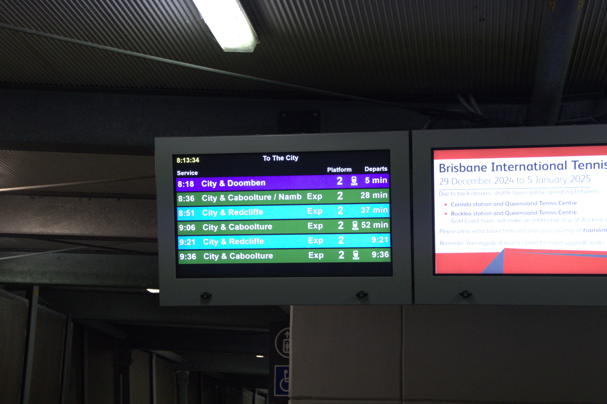

SEQ Train Craziness¶
There have certainly been a variety of track closures and other things that have forced trains to take new routes to get through. One of the most common is a Cleveland / Ferny Grove line pairing due to Northern track closures, as those two lines are the only ones fully running. Here are some more ones I found, and you can view some others observed before my time by another train fan - Rail Town Productions - here: https://www.youtube.com/playlist?list=PLsP7z1D3Htz0ZEf6jGmSVCP-idQHz5_9t
Doomben train at Milton¶

This occured during New Year's Eve 2024, just after the 7:45pm fireworks, so they were running more frequent services and all of the fares were free, but I'm still not sure why they would do this.Cyclone Alfred¶
During Cyclone Alfred, various crazy things happened. All PT was cancelled on Thursday (6th March), and some trains were moved to be stabled at stations around the network. I only managed to go to Indooroopilly station, Auchenflower station, Roma Street station, and Taringa station to take pictures, however there was also trains stabled at Miltion and possibly other locations. I passed by and saw that there were no trains at Corinda, Graceville, or Sherwood. The trains I saw were as follows:
- IMU106/IMU109 (p4) + NGR739 (p3) @ Taringa (security guards were very nice and let me take pictures 😊)
- NGR752 (p6) + SMU222 and another 100/120/200/220 at platform 2?!?! (or maybe 3) @ Roma Street (all the fare gates were closed and there was some flooding so I had to head to the lookout)
- SMU210/SMU202 (p3) + SMU261 and another 160/260 (p4) @ Auchenflower (I didn't go over to platform 4, and the other train was obscured by SMU210). I went at like 6am and when I asked one of the guards if I could take pictures he just grunted. It was during a shift change so he must've been on the night shift.
- NGR732 (p3) + SMU201/SMU209 (p4) @ Indooroopilly (guard didn't let me take any photos 😭)
Buses in Brisbane (not Redlands or GC, as they were seriously impacted. I think only inner-ish suburbs) reopened on Sunday, and I went to check them out and take pictures, however on the way back I overheard an interesting call on the radio that went something like this:
"All buses... If you have no passengers or just got out of the depot, return immediately and await further instructions. If you have passengers, continue until you have none then return to the depot immediately and await further instructions".
Turns out, at ~11am, they cancelled the bus services. While I was walking back to my house, I spotted a ferry heading upstream past Milton, despite there not being any ferry services. Kinda sus.
Roma Street had some minor flooding (I passed by on the way to the busway, and it looked like there was a big puddle on the floor), so when they reopened partial train services (ferny grove, beenleigh but only to kuraby, airport, springfield, and inner north - city to northgate lines on a Sunday timetable) on Monday (the 10th), the trains ran express past it.
Apparently, they had lost all signalling telemetry between Carseldine and Caboolture, so no trains past Northgate.
They had more services on Tuesday, and on Wednesday all train services were restored.